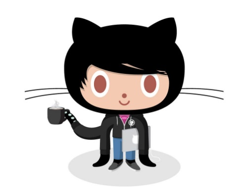

All About Github
- Q: What is a version control system?
- A: It records the changes made to a set of files to help you recall the versions later.
- Q: What is Git?
- A: A distributed version control system that tracks changes in any set of computer files.
- Q: What is GitHub?
- A: It is a developer platform that allows developers to create, store, manage and share their code.
- Q: What is the difference between Git and Github?
- A: Git is used for git in general. Github can manage many features of Github.
- Q: Who started Github and how was it started?
- A: GitHub was founded by Tom Preston-Werner, Chris Wanstrath, and PJ Hyett in 2008. They wanted to create a platform that would simplify the process of collaboration among developers, allowing them to easily share and collaborate on code.
- Q: What company owns it now?
- A: Microsoft
- Q: How much does a Github account cost?
- A: Github has both free and paid plans.
- Q: What is the Octocat?
- A: The Octocat is the official mascot of GitHub.
Git/Github terms:
- repository- a storage space where your project's files and version history are kept.
- commit- refers to a specific revision or snapshot of a set of files within a repository.
- fork- allows a user to make changes to the codebase without directly affecting the original repository.
- push- refers to the action of uploading local changes to a remote repository.
- pull requests- a way to propose changes to a repository.
- workflows- a powerful way to automate and streamline your development process, making it easier to maintain code quality, perform continuous integration, and deploy applications.
- issues- a feature that allows users to track and manage tasks, enhancements, bugs, and other types of work associated with a repository.
- raw button- allows users to view the raw content of a file directly in their web browser.
- blame button- allows users to view the Git blame information for a specific file.

|